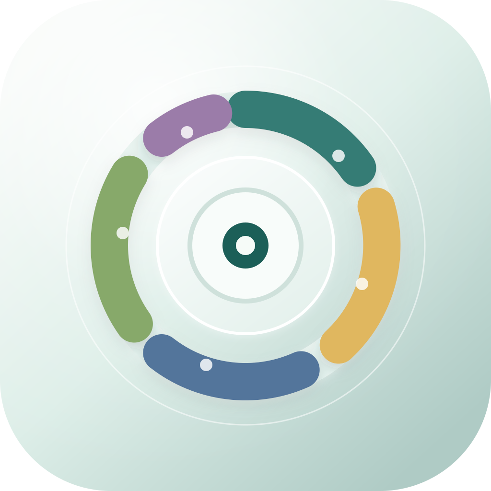

Variante A: Life Dashboard
Ein balancierter Dashboard-Ring mit mehreren Lebensbereichen rund um ein klares Zentrum.
Drei eigenstaendige Icon-Entwuerfe fuer ein ruhiges, hochwertiges macOS-Life-Dashboard. Die aktive AppIcon.appiconset-Struktur wird durch diese Vorschau nicht beruehrt.

Ein balancierter Dashboard-Ring mit mehreren Lebensbereichen rund um ein klares Zentrum.
Ein ruhiger Fortschrittspfad mit abstrakter Wachstumsform fuer bessere Routinen und Entwicklung.
Ein reduziertes Kontrollzentrum mit Fokuspunkt, Orbit und klarer Premium-Silhouette.